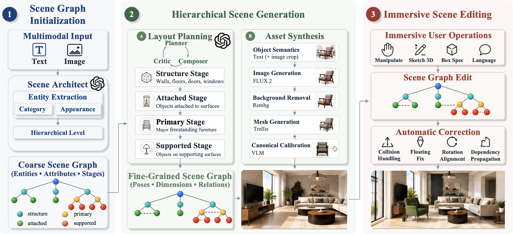
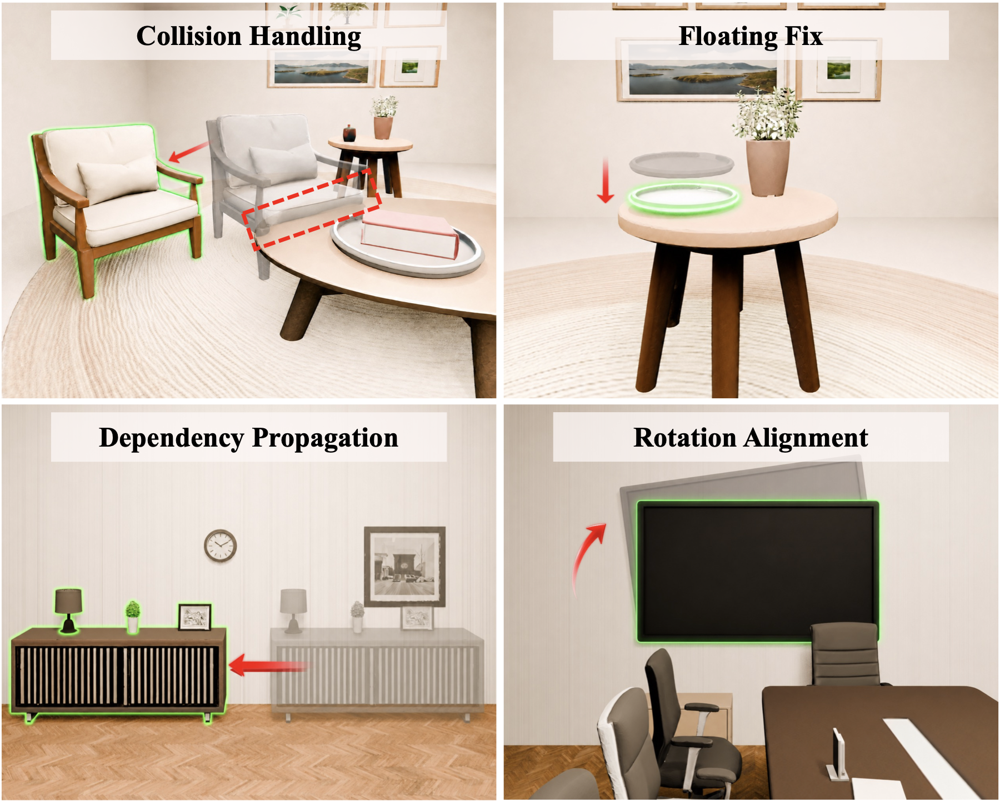
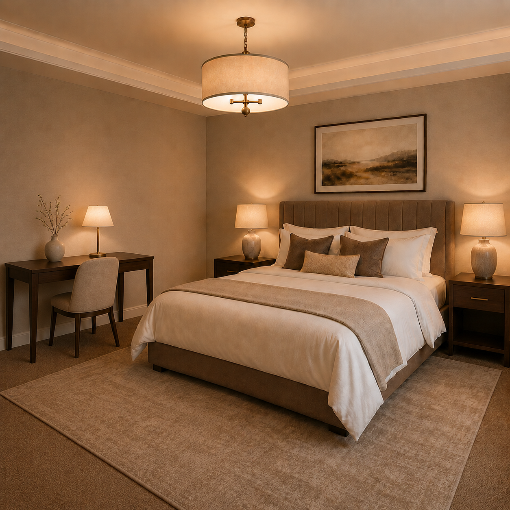
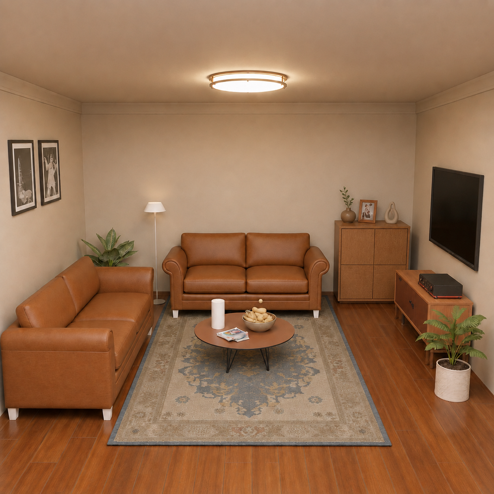
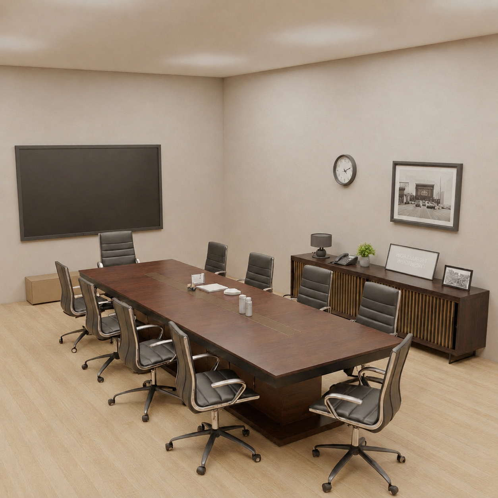

Multimodal generation & editing
Generate scenes from multiple inputs, then edit them directly in VR.
MULTIMODAL · HIERARCHICAL · IMMERSIVE
Plan without rendering. Generate assets in parallel.
Build and refine hierarchical 3D scenes directly in virtual reality.
01 / COARSE TO FINE, STAGE BY STAGE
Four cumulative stages bring the scene into VR, from room structure
to the smallest supported objects.
Generate scenes from multiple inputs, then edit them directly in VR.
Plan without rendered feedback and run scene construction work in parallel.
Four post-processing operations keep scene edits spatially coherent.
The 3D scene could not be loaded.
Explore cumulative scene layers. Two open sides and an open ceiling reveal the interior.
02 / UNDER THE HOOD
Hierarchical reasoning and parallel asset generation connect
multimodal intent to an editable, immersive scene.

Plan from coarse to fine. MOSAIC first establishes entities and their hierarchy, then resolves layouts across Structure, Attached, Primary, and Supported stages. Image inputs additionally supply visual topology to guide spatial reasoning.
Generate in parallel. Interact in place. Asset production runs alongside layout planning. As each stage becomes ready, its cumulative scene is delivered to Vision Pro. VR-native editing supports sketch and bounding-box insertion, appearance changes, and direct manipulation.
03 / FAST FROM INPUT TO SCENE
End-to-end generation time from input to an assembled scene.
Lower is better.
Total end-to-end time · mm:ss
04 / KEEPING EDITS SPATIALLY COHERENT
After each user operation, MOSAIC automatically resolves common spatial issues
so the scene stays stable, grounded, and easy to refine.

05 / LANGUAGE AS A STARTING POINT
Six generated scenes, arranged by prompt type.
Each result is a complete 3D environment rather than a rendered image.
“European palace style, grand and opulent, with ornate gilded details, marble surfaces, symmetrical layouts, crystal chandeliers, velvet furnishings, and soft golden lighting.”
“Dopamine style, playful and energetic, featuring bold colors, quirky furniture, cheerful patterns, bright accents, soft textures, and fun decor.”
“Design a modern coffee shop measuring 8.0 by 6.0 meters. Place a service counter along the north wall with a coffee machine, grinder, cash register, display case, cup, and tray on it. Arrange three round tables in the center with six chairs, three coffee cups, and three plates. Add a bench against the west wall, two posters on the east wall, a shelf in the northeast corner, a plant in the southeast corner, a trash bin near the counter, and three pendant lights above the tables.”
“A fully equipped modern kitchen with a central island, cooking appliances, dining area, storage, tableware, plants, and ceiling lights.”
“A baby’s bedroom.”
“A modern entertainment room for a teenager who likes playing basketball and computer games.”
Scenes rotate automatically. Use the button on each card to pause or resume.
06 / A PICTURE BECOMES A PLACE
Each reference image is reconstructed as a structured 3D environment.
Compare the source on the left with the rotating scene on the right.



Three source images and their complete 3D scene reconstructions.
07 / CREATE. REFINE. REIMAGINE.
Explore successive edits to the same scene, using a sketch, a bounding box,
or natural language. Drag the divider to compare before and after.
 AFTER
AFTER BEFORE
BEFORE08 / SEE IT IN ACTION
Watch the full MOSAIC workflow, from multimodal input and progressive generation
to in-situ scene editing in virtual reality.
09 / REFERENCE
BibTeX template. Author and publication details will be updated when available.
@misc{mosaic,
title = {MOSAIC: Multimodal Scene Authoring via
Hierarchical Agent Orchestration in Virtual Reality},
howpublished = {\url{https://github.com/ZhuSiiqii/MOSAIC}},
note = {Author and publication details forthcoming}
}